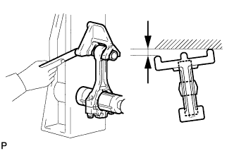

CYLINDER BLOCK > INSPECTION |
| 1. CLEAN CYLINDER BLOCK SUB-ASSEMBLY |
Using a gasket scraper, remove all the gasket material from the top surface of the cylinder block.
Using a soft brush and solvent, thoroughly clean the cylinder block.
| 2. INSPECT CYLINDER BLOCK FOR WARPAGE |
Using a precision straightedge and feeler gauge, measure the warpage of the surfaces which contact the cylinder head gaskets.
Visually check the cylinder for vertical scratches. If deep scratches are present, rebore all 8 cylinders.
If necessary, replace the cylinder block sub-assembly.
| 3. INSPECT CYLINDER BORE |
Using a cylinder gauge, measure the cylinder bore diameter at positions A and B in the thrust and axial directions.
| *a | Thrust Direction |
| *b | Axial Direction |
| *c | Center |
 | Engine Front |
| 4. INSPECT RING GROOVE CLEARANCE |
Using a feeler gauge, measure the clearance between a new piston ring and the wall of the ring groove.
| Item | Specified Condition |
| No. 1 compression ring | 0.020 to 0.070 mm (0.000787 to 0.00276 in.) |
| No. 2 compression ring | 0.020 to 0.060 mm (0.000787 to 0.00236 in.) |
| Oil ring | 0.070 to 0.145 mm (0.00276 to 0.00571 in.) |
| 5. INSPECT PISTON RING END GAP |
Insert the piston ring into the cylinder bore.
Using a piston, push the piston ring a little beyond the bottom of the ring travel, 60 mm (2.36 in.) from the top of the cylinder block.
Using a feeler gauge, measure the end gap.
| Item | Specified Condition |
| No. 1 compression ring | 0.23 to 0.33 mm (0.00906 to 0.0130 in.) |
| No. 2 compression ring | 0.40 to 0.50 mm (0.0157 to 0.0197 in.) |
| Oil ring (Side rail) | 0.10 to 0.40 mm (0.00394 to 0.0157 in.) |
| Item | Specified Condition |
| No. 1 compression ring | 0.42 mm (0.0165 in.) |
| No. 2 compression ring | 0.55 mm (0.0217 in.) |
| Oil ring (Side rail) | 0.45 mm (0.0177 in.) |
| 6. CLEAN PISTON WITH PIN SUB-ASSEMBLY |
Clean the piston.
Using a gasket scraper, remove the carbon from the top of the piston.
Using a groove cleaning tool or broken ring, clean the piston ring grooves.
Using solvent and a brush, thoroughly clean the piston.
| 7. INSPECT PISTON WITH PIN SUB-ASSEMBLY |
Using a micrometer, measure the piston diameter at a position that is 15.0 mm (0.591 in.) from the bottom of the piston (refer to the illustration).
| 8. INSPECT PISTON OIL CLEARANCE |
Measure the cylinder bore diameter in the thrust direction.
Subtract the piston diameter measurement from the cylinder bore diameter measurement.
| 9. INSPECT PISTON PIN OIL CLEARANCE |
Check each mark on the piston and connecting rod.
| *1 | Front Mark |
| *2 | Position Pin Hole Inside Diameter Mark |
| *3 | Connecting Rod Bush Inside Diameter Mark |
Using a caliper gauge, measure the inside diameter of the piston pin hole.
| Item | Specified Condition |
| Mark A | 21.998 to 22.001 mm (0.86606 to 0.86618 in.) |
| Mark B | 22.001 to 22.004 mm (0.86618 to 0.86630 in.) |
| Mark C | 22.004 to 22.007 mm (0.86630 to 0.86642 in.) |
Using a micrometer, measure the piston pin diameter.
| Measurement Position | Piston Pin Position |
| a | 28 mm (1.102 in.) from edge |
| b | 5 mm (0.197 in.) from edge |
| Item | Specified Condition |
| Mark A | 21.998 to 22.001 mm (0.86606 to 0.86618 in.) |
| Mark B | 22.001 to 22.004 mm (0.86618 to 0.86630 in.) |
| Mark C | 22.004 to 22.007 mm (0.86630 to 0.86642 in.) |
Using a caliper gauge, measure the inside diameter of the connecting rod bush.
| Item | Specified Condition |
| Mark A | 22.005 to 22.008 mm (0.86634 to 0.86645 in.) |
| Mark B | 22.008 to 22.011 mm (0.86645 to 0.86657 in.) |
| Mark C | 22.011 to 22.014 mm (0.86657 to 0.86669 in.) |
Subtract the piston pin diameter measurement from the piston pin hole diameter measurement.
Subtract the piston pin diameter measurement from the bush inside diameter measurement.
| 10. INSPECT CONNECTING ROD SUB-ASSEMBLY |
Using a rod aligner and feeler gauge, check the connecting rod alignment.
Check for bend.
|  |
Check for twist.
| 11. INSPECT CRANKSHAFT |
Using a dial indicator, measure the runout at the center journal.
Using a micrometer, measure the diameter of each main journal.
Check each main journal for taper and out-of-round as shown in the illustration.
Using a micrometer, measure the diameter of each crank pin.
Check each crank pin for taper and out-of-round as shown in the illustration.
| 12. INSPECT CRANKSHAFT OIL CLEARANCE |
Check each main journal and bearing for pitting and scratches.
If the journal or bearing is damaged, replace the bearing.
Install the crankshaft bearings and upper crankshaft thrust washers.
Clean each main journal and bearing.
Place the crankshaft on the cylinder block.
Lay a strip of Plastigage across each journal.
| *1 | Plastigage |
Install the crankshaft bearing caps (Click here).
Remove the crankshaft bearing caps (Click here).
Measure the Plastigage at its widest point.
| Item | Specified Condition |
| No. 1 and No. 5 journals | 0.017 to 0.030 mm (0.000669 to 0.00118 in.) |
| Other journals | 0.024 to 0.037 mm (0.000945 to 0.00146 in.) |
| Item | Specified Condition |
| No. 1 and No. 5 journals | 0.050 mm (0.00197 in.) |
| Other journals | 0.060 mm (0.00236 in.) |
| *1 | Plastigage |
| *1 | Cylinder Block Number Mark (A) | *2 | Crankshaft Number Mark (B) |
| *3 | Journal Bearing Number Mark | *4 | No. 1 and No. 5 Journal Bearings |
| *5 | No. 2, No. 3 and No. 4 Journal Bearings | *6 | No. 1 Journal |
| *7 | No. 2 Journal | *8 | No. 3 Journal |
| *9 | No. 4 Journal | *10 | No. 5 Journal |
| Item | Number Mark (A) + (B) | ||||||||||
| 00 to 02 | 03 to 05 | 06 to 08 | 09 to 11 | 12 to 14 | 15 to 17 | 18 to 20 | 21 to 23 | 24 to 26 | 27 to 28 | ||
| Use bearing | Upper | 4 | 5 | 5 | 6 | 6 | 7 | 7 | 8 | 8 | 9 |
| Lower | 5 | 5 | 6 | 6 | 7 | 7 | 8 | 8 | 9 | 9 | |
| Item | Number Mark (A) + (B) | ||||||||||
| 00 to 02 | 03 to 05 | 06 to 08 | 09 to 11 | 12 to 14 | 15 to 17 | 18 to 20 | 21 to 23 | 24 to 26 | 27 to 28 | ||
| Use bearing | Upper | 3 | 4 | 4 | 5 | 5 | 6 | 6 | 7 | 7 | 8 |
| Lower | 4 | 4 | 5 | 5 | 6 | 6 | 7 | 7 | 8 | 8 | |
| Item | Specified Condition |
| Mark 00 | 72.000 mm (2.83464 in.) |
| Mark 01 | 72.001 mm (2.83469 in.) |
| Mark 02 | 72.002 mm (2.83472 in.) |
| Mark 03 | 72.003 mm (2.83476 in.) |
| Mark 04 | 72.004 mm (2.83480 in.) |
| Mark 05 | 72.005 mm (2.83484 in.) |
| Mark 06 | 72.006 mm (2.83488 in.) |
| Mark 07 | 72.007 mm (2.83492 in.) |
| Mark 08 | 72.008 mm (2.83496 in.) |
| Mark 09 | 72.009 mm (2.83500 in.) |
| Mark 10 | 72.010 mm (2.83503 in.) |
| Mark 11 | 72.011 mm (2.83508 in.) |
| Mark 12 | 72.012 mm (2.83512 in.) |
| Mark 13 | 72.013 mm (2.83516 in.) |
| Mark 14 | 72.014 mm (2.83520 in.) |
| Mark 15 | 72.015 mm (2.83524 in.) |
| Mark 16 | 72.016 mm (2.83528 in.) |
| Item | Specified Condition |
| Mark 00 | 67.000 mm (2.63780 in.) |
| Mark 01 | 66.999 mm (2.63775 in.) |
| Mark 02 | 66.998 mm (2.63771 in.) |
| Mark 03 | 66.997 mm (2.63768 in.) |
| Mark 04 | 66.996 mm (2.63763 in.) |
| Mark 05 | 66.995 mm (2.63760 in.) |
| Mark 06 | 66.994 mm (2.63756 in.) |
| Mark 07 | 66.993 mm (2.63751 in.) |
| Mark 08 | 66.992 mm (2.63748 in.) |
| Mark 09 | 66.991 mm (2.63744 in.) |
| Mark 10 | 66.990 mm (2.63740 in.) |
| Mark 11 | 66.989 mm (2.63736 in.) |
| Mark 12 | 66.988 mm (2.63732 in.) |
| Upper Bearing | Lower Bearing | ||
| Item | Specified Condition | Item | Specified Condition |
| Mark 4 | 2.501 to 2.504 (0.0985 to 0.0986 in.) | Mark 5 | 2.488 to 2.491 (0.0980 to 0.0981 in.) |
| Mark 5 | 2.504 to 2.507 (0.0986 to 0.0987 in.) | Mark 6 | 2.491 to 2.494 (0.0981 to 0.0982 in.) |
| Mark 6 | 2.507 to 2.510 (0.0987 to 0.0988 in.) | Mark 7 | 2.494 to 2.497 (0.0982 to 0.0983 in.) |
| Mark 7 | 2.510 to 2.513 (0.0988 to 0.0989 in.) | Mark 8 | 2.497 to 2.500 (0.0983 to 0.0984 in.) |
| Mark 8 | 2.513 to 2.516 (0.0989 to 0.0991 in.) | Mark 9 | 2.500 to 2.503 (0.0984 to 0.0985 in.) |
| Mark 9 | 2.516 to 2.519 (0.0991 to 0.0992 in.) | - | - |
| Upper Bearing | Lower Bearing | ||
| Item | Specified Condition | Item | Specified Condition |
| Mark 3 | 2.482 to 2.485 (0.0977 to 0.0978 in.) | Mark 4 | 2.501 to 2.504 (0.0985 to 0.0986 in.) |
| Mark 4 | 2.485 to 2.488 (0.0978 to 0.0980 in.) | Mark 5 | 2.504 to 2.507 (0.0986 to 0.0987 in.) |
| Mark 5 | 2.488 to 2.491 (0.0980 to 0.0981 in.) | Mark 6 | 2.507 to 2.510 (0.0987 to 0.0988 in.) |
| Mark 6 | 2.491 to 2.494 (0.0981 to 0.0982 in.) | Mark 7 | 2.510 to 2.513 (0.0988 to 0.0989 in.) |
| Mark 7 | 2.494 to 2.497 (0.0982 to 0.0983 in.) | Mark 8 | 2.513 to 2.516 (0.0989 to 0.0991 in.) |
| Mark 8 | 2.497 to 2.500 (0.0983 to 0.0984 in.) | - | - |
Completely remove the Plastigage.
Perform the inspection above for each journal.
| 13. INSPECT CONNECTING ROD BOLT |
Using a vernier caliper, measure the tension portion diameter of the bolt.
| *1 | Tension Portion |
| 14. INSPECT CRANKSHAFT BEARING CAP SET BOLT |
Using a vernier caliper, measure the length of the crankshaft bearing cap bolt from the seat to the end.
| Item | Specified Condition |
| Bolt A | 90.3 to 91.7 mm (3.56 to 3.61 in.) |
| Bolt B | 78.8 to 80.2 mm (3.10 to 3.16 in.) |
| Item | Specified Condition |
| Bolt A | 92.7 mm (3.65 in.) |
| Bolt B | 81.2 mm (3.20 in.) |
| *A | Bolt A |
| *B | Bolt B |
| *1 | Measurement Length |
| *2 | Distance |
Using a vernier caliper, measure the diameter of the elongated threads around the point indicated in the illustration.
| Item | Specified Condition |
| Bolt A | 10.5 to 11.0 mm (0.413 to 0.433 in.) |
| Bolt B | 9.5 to 10.0 mm (0.374 to 0.394 in.) |
| Item | Specified Condition |
| Bolt A | 10.4 mm (0.409 in.) |
| Bolt B | 9.4 mm (0.370 in.) |
| 15. INSPECT NO. 1 OIL NOZZLE SUB-ASSEMBLY |
Push the check valve with a pin to check if it is stuck.
If stuck, replace the No. 1 oil nozzle.
Push the check valve with a pin to check if it moves smoothly.
If it does not move smoothly, clean or replace the No. 1 oil nozzle sub-assembly.
While covering A, blow air into B. Check that air does not leak through C. Perform the check again while covering B and blowing air into A.
If air leaks, clean or replace the No. 1 oil nozzle sub-assembly.
Push the check valve while covering A and blow air into B. Check that air passes through C. Perform the check again while covering B, pushing the check valve and blowing air into A.
If air does not pass through C, clean or replace the No. 1 oil nozzle sub-assembly.